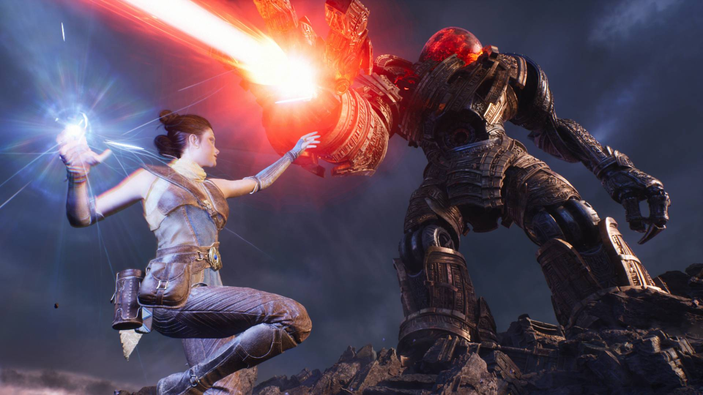

Valley of the Ancients Redesign (In Progress)
I'm working on redesigning and reimplementing the audio assets into the sample game Valley of the Ancients made by Epic Games for UE5. I'm using this as a way to experiment with more techniques in Wwise and MetaSounds in UE5.